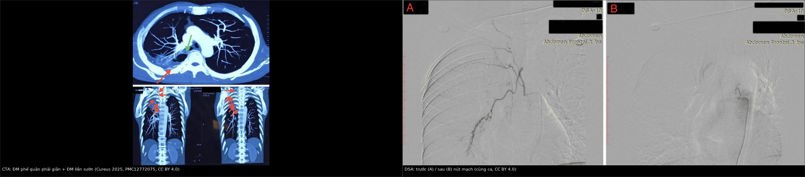
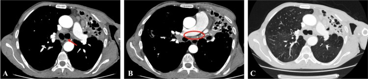
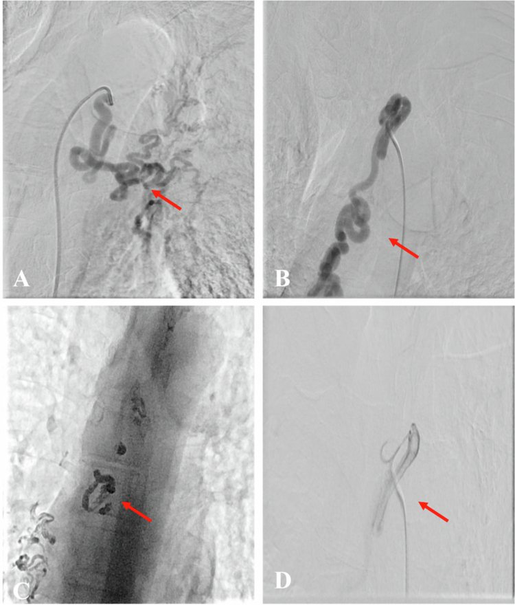
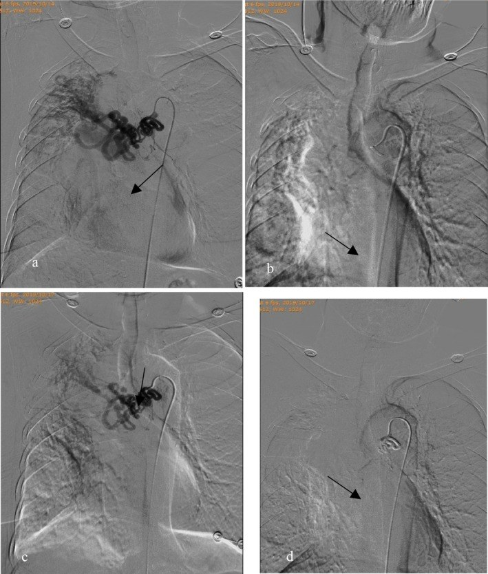

091 — Ho ra máu ồ ạt & nút mạch động mạch phế quản / Massive hemoptysis and bronchial artery embolization
Tags: pattern:ho-ra-mau pattern:chay-mau vung:phoi protocol:CTA-nguc protocol:DSA-nut-mach
Mức chắc chắn (certainty): tổng hợp y văn (literature synthesis) — gộp 1 cohort 162 ca ho ra máu ồ ạt được nút mạch (Yue et al., Clin Respir J 2026, PMC13120837), 1 nghiên cứu tiến cứu 28 ca đối chiếu CTA–DSA (Haji Ahmadi et al., Libyan J Med 2026, PMC12903930), 1 ca nguyên văn dùng làm hình (PMC12772075), 1 ca nguyên văn về ho ra máu tĩnh mạch phản biện (Bertuccio et al., Diagnostics 2026, PMC13565564) và hướng dẫn xử trí của Hội Nội tiết châu Âu (PMC5314805 — chỉ dùng cho phần sốc). Số chưa đối chiếu được ghi "chưa rõ", không bịa.
1. Tổng quan bệnh học – cơ chế hình ảnh
- Vì sao ho ra máu ồ ạt giết người bằng ngạt chứ không bằng mất máu: động mạch phế quản là nhánh của động mạch chủ xuống, áp lực hệ thống (~100 mmHg); động mạch phổi chỉ ~15–20 mmHg. Máu từ nhánh phế quản vỡ phun thẳng vào lòng phế quản, đông thành cục lấp đường thở → tử vong do asphyxia, không phải do thiếu thể tích. Vì vậy ưu tiên số một là bảo vệ đường thở, không phải truyền máu (Yue et al. 2026: tử vong 6,5–38%, "nguyên nhân tử vong thường là ngạt").
- Ngưỡng định nghĩa (cửa 1 của Argon): ho ra máu ồ ạt = > 100 mL một lần hoặc > 500 mL/24 giờ (Yue et al. 2026). Không có định nghĩa thống nhất toàn cầu — nên ghi rõ ngưỡng khi trao đổi với đồng nghiệp.
- Vì sao mạch phế quản phì đại (hypertrophy): viêm mạn (lao, giãn phế quản, nấm hang) → giảm tưới máu phổi + thiếu oxy mô → giãn mạch và tăng sinh mao mạch, kèm shunt hệ thống–phổi. Trên CTA, mạch phì đại khi đường kính > 2 mm (bình thường **< 1,5 mm** ở đoạn gần, **0,5 mm** ở đoạn xa — Haji Ahmadi et al. 2026). Trong 28 ca của nhóm này, **42,9% phì đại động mạch phế quản phải**, **25,0% bên trái** (ngưỡng > 2 mm).
- Vì sao phải chụp CTA trước DSA — ba lý do quyết định:
- Tìm nguồn ngoài phế quản: 25% ca (7/28) có động mạch hệ thống không phải phế quản (NBSA) — liên sườn, động mạch ngực trong, nhánh dưới đòn, hoành, thân tạng. Bỏ sót = nút mạch xong vẫn chảy.
- Xác định vị trí xuất phát (orthotopic từ động mạch chủ xuống ngang T5–T6 so với ectopic từ cung động mạch chủ/thân sườn–phế quản) — quyết định ống thông và thời gian thủ thuật.
- Nhìn thấy động mạch cấp máu tủy trước khi bơm hạt — nút nhầm nhánh này gây nhồi máu tủy sống (biến chứng thảm khốc, hiếm nhưng không hồi phục).
- Hiệu quả thật của nút mạch (đừng hứa quá): thành công kỹ thuật 98,76% (160/162), nhưng thành công lâm sàng 12 tháng chỉ 70,99% (115/162); 47 ca tái phát, thời gian tái phát trung bình 26 ± 3,43 ngày (Yue et al. 2026). Ở cohort 28 ca nhỏ hơn: thành công ngay 92,9%, tái phát 14,3% trong 30 ngày (Haji Ahmadi et al. 2026).
- Nguyên nhân hay gặp (28 ca): di chứng lao 25,0%, giãn phế quản 21,4%, ung thư phổi 21,4%, lao hoạt động 10,7%, aspergilloma 7,1%, viêm phổi hoại tử 7,1%, không rõ nguyên nhân 7,1%. X-quang ngực chỉ định vị được nguồn chảy máu ở 45–60% và gợi ý nguyên nhân ở ≤ 35% ca → X-quang bình thường không loại trừ ho ra máu nguy hiểm.
2. Mẫu hình + chẩn đoán phân biệt theo vị trí nguồn chảy (gamut)
Câu hỏi thực hành: bệnh nhân đang ho ra máu — máu từ đâu? Chọn theo 4 tầng giải phẫu, vì mỗi tầng có can thiệp khác nhau.
- Động mạch phế quản (phần lớn ca): giãn/phì đại do viêm mạn, lao, giãn phế quản, nấm hang. → Nút mạch phế quản (BAE) là điều trị đầu tay.
- Động mạch hệ thống không phải phế quản (NBSA): liên sườn, ngực trong, dưới đòn, hoành, thân tạng — xuất hiện khi có dính màng phổi/thành ngực hoặc bệnh màng phổi mạn. 25% ca trong cohort trên.
- Động mạch phổi: phình giả Rasmussen trong hang lao, phình giả sau đặt catheter Swan–Ganz, hội chứng Hughes–Stovin, Behçet, dị dạng động–tĩnh mạch. → BAE thất bại, phải nút nhánh động mạch phổi bằng coil/plug.
- Tĩnh mạch / mao mạch: giãn tĩnh mạch khí quản do tắc tĩnh mạch chủ trên (bướu giáp sau xương ức, huyết khối, xơ trung thất) — BAE không bao giờ cầm; và xuất huyết phế nang lan tỏa (miễn dịch, nhiễm trùng, tim mạch) — máu mao mạch, không có mạch nguồn để nút.
- Gợi nhớ "B–N–P–V": Bronchial (phế quản) → Non-bronchial systemic → Pulmonary artery → Venous/capillary.
3. Bảng so sánh phân biệt (ma trận đối chiếu)
| Thực thể (entity) | Hình ảnh điển hình (CT/DSA) | Chốt vào (rule-in) | Chốt loại (rule-out) | Gợi ý xác nhận |
|---|---|---|---|---|
| Nguồn động mạch phế quản | CTA: nhánh > 2 mm, xuất phát từ động mạch chủ xuống T5–T6, đi dọc phế quản; DSA: mạch giãn, xoắn, "corkscrew", tăng tưới máu | Mạch > 2 mm + xuất phát trực tiếp từ ĐMC xuống | Không thấy nhánh phế quản giãn nhưng vẫn chảy máu → tìm NBSA/ĐM phổi | CTA ≤ 1 mm thì động mạch; DSA chọn lọc |
| NBSA (liên sườn, ngực trong, dưới đòn) | CTA: nhánh từ thành ngực/màng phổi dày, chạy vào tổn thương phổi qua dính màng phổi | Nhánh nuôi từ ngoài phổi đi vào tổn thương + màng phổi dày | Mạch xuất phát từ ĐMC xuống đúng vị trí phế quản → là phế quản | CTA dựng MIP coronal; phải nút cả NBSA |
| Phình giả / phình động mạch phổi (Rasmussen) | CTA: túi phình từ nhánh động mạch phổi sát thành hang; DSA phổi: đầy thuốc giữ hình | Túi phình nối với nhánh ĐM phổi + hang lao cũ | Phình từ ĐMC/ĐM phế quản → nút phế quản | Chụp động mạch phổi chọn lọc, không phải chỉ chụp ĐMC |
| Giãn tĩnh mạch khí quản (tắc TM chủ trên) | CT: hẹp/tắc TM chủ trên + tuần hoàn bàng hệ trung thất–thành ngực; nội soi: tĩnh mạch dưới niêm mạc | Tái phát sau BAE "kỹ thuật tốt" + tắc TM chủ trên | Mạch phế quản giãn rõ + không tắc tĩnh mạch → nguồn động mạch | Nội soi phế quản + NBI; tái thông tĩnh mạch, không nút động mạch |
| Xuất huyết phế nang lan tỏa | CT: GGO/đông đặc lan tỏa hai bên, không có mạch nguồn | Đông đặc lan tỏa + thiếu máu + không ổ khu trú | Ổ khu trú + mạch giãn → nguồn mạch | Rửa phế quản (hemosiderin), miễn dịch |

Trái: CTA — mũi tên xanh chỉ động mạch phế quản phải giãn, mũi tên đỏ chỉ giãn phế quản; các panel dưới: động mạch liên sườn 1–6 giãn (mũi tên đỏ). Phải: DSA trước (A) và sau (B) nút mạch bằng PVA + keo. Nguồn: Cureus 2025, PMC12772075 Fig. 3 và Fig. 5, CC BY 4.0. Ảnh ghép letterbox, không crop.Đọc DSA đúng thứ tự (tránh nút nhầm)
- Xác định catheter đang ở đâu (ĐMC xuống / thân sườn–phế quản / nhánh liên sườn) — chụp "flush" trước, chọn lọc sau.
- Tìm nhánh cấp máu tủy (artery of Adamkiewicz) — nếu nhánh liên sườn–thắt lưng cho nhánh xuống tủy, không được nút hoặc phải vượt qua nhánh đó.
- Chụp thì muộn tìm shunt hệ thống–phổi và xuất thuốc (extravasation).
- Nút đến khi mất tưới máu ổ tổn thương ("pruning"), không nút "cho đẹp" toàn bộ mạch lành.
4. Protocol chụp + phân độ & quyết định can thiệp
CTA ngực (trước DSA, mọi ca không chắc nguồn):
- Lát ≤ 1 mm, cửa sổ trung thất + phổi, thì động mạch (bolus tracking, ~25–35 giây), phủ từ đỉnh phổi đến trên cơ hoành.
- Dựng MIP coronal/sagittal để lần theo mạch; đo đường kính mạch phế quản (mm) và ghi vị trí xuất phát (orthotopic vs ectopic) vào phiếu.
- Ghi rõ có/không NBSA, có/không túi phình nhánh phổi, có/không giãn tĩnh mạch trung thất.
- Đối chiếu CTA–DSA chỉ ở mức trung bình cho phát hiện phì đại (Cohen's kappa mức "moderate", Haji Ahmadi et al. 2026) → CTA âm tính vẫn phải chụp DSA nếu lâm sàng nặng.
Vật liệu nút mạch (kinh điển):
| Vật liệu | Dùng khi | Lưu ý |
|---|---|---|
| Hạt PVA 355–500 µm | Nguồn phế quản thông thường | Không dùng hạt quá nhỏ (< 300 µm) → nguy cơ hoại tử phế quản/tủy |
| Bọt gelatin (gelfoam) | Cầm máu tạm, ca cấp cứu | Tái thông sau vài tuần → tái phát muộn |
| Keo NBCA / Glubran–Lipiodol | Tái phát, mạch xoắn lớn, shunt | Khó kiểm soát, nguy cơ hoại tử nếu bơm xa |
| Coil / plug | Phình, phình giả, mạch lớn | Để lại dị vật vĩnh viễn trong mạch |
flowchart TD
A[Ho ra mau o at] --> B[Uu tien duong tho: nam nghieng ben chay, dat ong noi khi quan neu can]
B --> C[Hoi suc, truyen mau, xac dinh ben chay]
C --> D[CTA nguc lat ≤1 mm thi dong mach]
D --> E{Nguon dong mach phe quan hoac NBSA?}
E -->|Co| F[DSA chon loc va nut mach]
E -->|Khong| G{Tui phinh nhanh dong mach phoi?}
G -->|Co| H[Nut dong mach phoi bang coil hoac plug]
G -->|Khong| I[Tim nguyen nhan tinh mach hoac mao mach]
F --> J{Tai phat trong 24-48 gio?}
J -->|Co| K[Chup lai: tai thong, NBSA bo sot, nguon dong mach phoi]
J -->|Khong| L[Theo doi 12 thang, dieu tri nguyen nhan nen]
- Nút mạch hay mổ? BAE là điều trị đầu tay cho ho ra máu ồ ạt (ít xâm lấn, làm được ngay cả khi bệnh nhân nặng). Mổ dành cho: thất bại/tái phát sau ≥ 2 lần nút, phình động mạch phổi lớn không nút được, vỡ phế quản–màng phổi, hoặc tổn thương khu trú mổ được (u, giãn phế quản một thùy) ở bệnh nhân đủ điều kiện.
- Theo dõi sau nút: nằm lại 24–48 giờ (đa số tái phát sớm trong 26 ngày — Yue et al. 2026), chụp lại khi ho ra máu tái diễn; đánh giá hiệu quả lúc 30 ngày và 12 tháng.
5. Biến thể bình thường và cạm bẫy
- Biến thể bình thường: động mạch phế quản phải thường xuất phát từ thân sườn–phế quản (intercostobronchial trunk), không phải trực tiếp từ ĐMC; có ca xuất phát lạc chỗ (ectopic) từ cung ĐMC — đọc CTA mà không lần theo gốc sẽ tưởng "không có mạch phế quản".
- Cạm bẫy 1 — tĩnh mạch: ho ra máu tái phát trong 24 giờ sau BAE "kỹ thuật tốt" ở người có bướu giáp sau xương ức/tắc TM chủ trên → giãn tĩnh mạch khí quản, không phải nguồn động mạch; nút thêm động mạch vô ích, phải tái thông tĩnh mạch (Bertuccio et al. 2026, PMC13565564).
- Cạm bẫy 2 — nguồn động mạch phổi: hang lao + ho máu + túi phình sát thành hang → nút phế quản xong vẫn chảy; phải chụp động mạch phổi.
- Cạm bẫy 3 — bỏ sót NBSA: chỉ nút nhánh phế quản khi có nhánh liên sườn/ngực trong nuôi ổ tổn thương → tái phát sớm; nút cả hai.
- Cạm bẫy 4 — nhồi máu tủy sống: bơm hạt vào nhánh liên sườn–thắt lưng có nhánh tủy; luôn chụp kiểm tra trước khi bơm, dùng hạt ≥ 355 µm.
- Cạm bẫy 5 — "máu đỏ tươi = động mạch": không đáng tin; máu từ tĩnh mạch cổ/khí quản cũng đỏ tươi. Dựa vào CTA + nội soi, không dựa màu máu.
- Cạm bẫy hình ảnh của bài gốc: ở Fig. 1C (PMC12903930) chú thích gốc ghi xẹp thùy trên phổi phải, trong khi hình cho thấy đám mờ bên trái — ghi nhận sự không khớp của nguồn, không tự sửa chú thích.
6. Tự lượng giá — Blind Quiz
Ca 1 — Nam 52 tuổi, ho ra máu; CTA ngực có cản quang. Trước khi đọc đáp án, hãy chỉ ra mạch bất thường.

- Gợi ý lâm sàng: ho ra máu mức trung bình–nhiều, có bệnh phổi nền.
- Câu hỏi: Mạch nào giãn? Xuất phát từ đâu? Có cần tìm thêm nguồn ngoài phế quản không?
Bấm để hiện đáp án (findings + chẩn đoán)
- Dấu hiệu: động mạch phế quản trái giãn, xoắn (mũi tên đỏ A/B), xuất phát trực tiếp từ động mạch chủ xuống ở vị trí 12 giờ (orthotopic); hình C (cửa sổ phổi) có xẹp phổi + giãn phế quản.
- Chẩn đoán: ho ra máu do động mạch phế quản phì đại — vì viêm mạn làm tăng sinh mạch hệ thống trong phổi.
- Bước tiếp: DSA chọn lọc + nút mạch; vẫn phải tìm NBSA vì 25% ca có nhánh ngoài phế quản.
- Nguồn ảnh: Libyan J Med 2026, PMC12903930 Fig. 1, CC BY-NC 4.0 (nguyên bản, không chỉnh sửa).
Ca 2 — Vẫn ca trên: DSA chọn lọc. Nhìn 4 panel, đoán panel nào là "sau nút".

- Câu hỏi: Panel nào chứng minh nút thành công? Vì sao panel B lại quan trọng về mặt kỹ thuật?
Bấm để hiện đáp án
- Dấu hiệu: A — động mạch phế quản trái giãn, xoắn; B — động mạch phế quản phải xuất phát lạc chỗ từ mặt dưới cung động mạch chủ, đường đi ngoằn ngoèo; C — tắc hoàn toàn mạch bất thường sau nút bằng PVA + keo; D — tắc mạch sau bơm PVA.
- Ý nghĩa: gốc lạc chỗ khiến thao tác chọn lọc khó — phải chụp "flush" trước để không bỏ sót.
- Nguồn: PMC12903930 Fig. 2, CC BY-NC 4.0.
Ca 3 — Nam 74 tuổi, giãn phế quản, ho ra máu ồ ạt tái phát sau lần nút đầu. Nhìn DSA, giải thích vì sao tái phát.

- Câu hỏi: 3 chẩn đoán phân biệt cho tái phát sớm? Panel nào cho thấy "mạch vẫn còn" và vật liệu lần hai là gì?
Bấm để hiện đáp án
- Dấu hiệu: (a) động mạch phế quản phải giãn, xoắn, tăng tưới máu; (b) sau nút PVA + gelfoam — mạch "pruned"; (c) chụp lại trước lần nút thứ hai: mạch vẫn phì đại, xoắn kiểu "corkscrew"; (d) sau nút NBCA: mạch tắc, ổ tăng tưới máu biến mất.
- Chẩn đoán: tái phát do tái thông/không nút hết nguồn — trong cohort 162 ca, tái phát 47 ca, trung bình 26 ngày; thành công lâm sàng 12 tháng chỉ 70,99%.
- Phân biệt: (1) tái thông mạch đã nút (gelatin sponge tan); (2) NBSA bỏ sót; (3) nguồn động mạch phổi (Rasmussen) không được nút.
- Nguồn: Clin Respir J 2026, PMC13120837 Fig. 4, CC BY 4.0.
Bài liên quan chéo
- 001 – Tổng quan hệ Ngực
- 025 – Hang & nấm phổi (phình giả Rasmussen trong hang lao)
- 041 – Tràn khí màng phổi
- 049 – Theo dõi sau cắt thùy phổi
- 084 – Viêm phổi thở máy (bảo vệ đường thở ở ICU)
- 092 – Suy thượng thận & suy tuyến yên quanh mổ (tụt HA kháng trị sau can thiệp)
Không dùng để chẩn đoán độc lập khi chưa có người hướng dẫn.